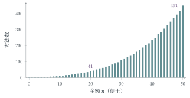

STEP I 1997，第 1 题
继续之前，请先阅读题目（原题为英文）。题目载于 STEP Support Programme 的题目资料库： step.maths.org/questions/97-s1-q1
引子
这看来是全书最容易的一题：把所有可能逐一列出便是。可是列举很快就会失控。用英国人口袋里的硬币，凑出 \(20\)p 有 \(41\) 种方法，凑出 \(50\)p 有 \(451\) 种，凑出 £1 更有 \(4563\) 种。这道题真正要求的是一套系统，也就是一种整理计数的方法，使得既无遗漏，亦无重复。
这套系统背后是一段优美的数学。每种硬币对应一个等比级数（geometric series），凑出 \(n\) 便士的方法数就是这些级数之积的一个系数（coefficient）；把同一个想法一并用于所有正整数，便得到欧拉（Euler）的分拆（partition）理论，那是数论中最深刻的课题之一。
动笔之前
只用 \(2\)p 和 \(1\)p 硬币，凑出 \(n\) 便士有多少种方法？为甚么答案只取决于你用了多少枚 \(2\)p 硬币？
一旦选定 \(2\)p 硬币的数目，其余的就必须全是 \(1\)p 硬币，所以 \(2\)p 硬币的每个可能数目 \(0, 1, \ldots, \lfloor n/2\rfloor\) 都恰好对应一种方法。这样共有 \(\lfloor n/2\rfloor + 1\) 种方法，记作 \(a(n)\)。例如 \(a(10) = 6\)，\(a(5) = 3\)。
逐步解题
阶段 1 十便士
按面值最大的硬币来整理计数。你可以用多少枚 \(10\)p 硬币？定下来之后，又可以用多少枚 \(5\)p 硬币？
一枚 \(10\)p 硬币：\(1\) 种方法。
不用 \(10\)p，用两枚 \(5\)p：\(1\) 种方法。
不用 \(10\)p，用一枚 \(5\)p：余下的 \(5\)p 由 \(2\)p 和 \(1\)p 凑成，有 \(a(5) = 3\) 种方法。
不用 \(10\)p 也不用 \(5\)p：\(10\)p 全由 \(2\)p 和 \(1\)p 凑成，有 \(a(10) = 6\) 种方法。
总数是 \(1 + 1 + 3 + 6 = 11\)。■
阶段 2 逐层建立
设 \(b(n)\) 为用 \(5\)p、\(2\)p 和 \(1\)p 硬币凑出 \(n\) 便士的方法数。怎样用函数 \(a\) 表示 \(b(n)\)？
选定 \(5\)p 硬币的数目 \(k\)；余下的 \(n - 5k\) 便士由 \(2\)p 和 \(1\)p 硬币凑成。所以 \[b(n) = a(n) + a(n - 5) + a(n - 10) + \cdots.\] 由此得
| \(n\) | \(0\) | \(5\) | \(10\) | \(15\) | \(20\) |
|---|---|---|---|---|---|
| \(a(n)\) | \(1\) | \(3\) | \(6\) | \(8\) | \(11\) |
| \(b(n) = a(n) + b(n - 5)\) | \(1\) | \(4\) | \(10\) | \(18\) | \(29\) |
同样地，设 \(c(n)\) 为连 \(10\)p 硬币也可使用时的方法数；则 \(c(n) = b(n) + b(n - 10) + \cdots\)，所以 \(c(10) = 10 + 1 = 11\)（与第 1 阶段的结果一致），而 \(c(20) = b(20) + b(10) + b(0) = 29 + 10 + 1 = 40\)。
阶段 3 二十便士
最后轮到 \(20\)p 硬币：我们要么用它（一种方法），要么不用（\(c(20)\) 种方法）。所以共有 \[40 + 1 = 41 \text{ 种方法}. \qed\]
留意当中的结构：每加入一种新硬币就多一层，而每一层都是把上一层按新硬币的面值为间隔取值再相加。你能看出电脑会怎样为 £1 甚至 £100 进行这项计算吗？
回顾
按最大的部分来整理。先固定面值最大的硬币的数目，计数便有条不紊。
建立表格。每加入一种新硬币，就多出一行，由上一行计算出来。这就是动态规划（dynamic programming），是电脑计算这类数目的标准方法。
与已知的情况核对。表格重现了 \(10\)p 的 \(11\) 种方法。
背后的数学
把硬币看成等比级数
以下这个想法把问题化为代数。所用 \(5\)p 硬币的数目可以是 \(0, 1, 2, \ldots\)，分别贡献 \(0, 5, 10, \ldots\) 便士。把这一点记录成级数 \[1 + x^5 + x^{10} + x^{15} + \cdots = \frac{1}{1 - x^5}.\] 对每种硬币都这样做，然后相乘： \[\frac{1}{(1 - x)(1 - x^2)(1 - x^5)(1 - x^{10})(1 - x^{20})} = \sum_n w(n)x^n.\] 把各括号乘开时，每一项 \(x^n\) 都来自在每个括号中各选一项，也就是为每种硬币各选一个数目，而总值为 \(n\)。所以 \(x^n\) 的系数 \(w(n)\) 正好就是凑出 \(n\) 便士的方法数。第 2 阶段的表格，其实就是把这个乘积逐个括号乘开。这正是 第 9.4 节 中母函数（generating function）的想法，而乘法正是它大显威力之处：母函数之积所计算的，就是各项选择的组合数目。

分拆
假如每个正整数都可以作为硬币的面值，又会怎样？这时，不计次序而把 \(n\) 写成正整数之和的方法数，就是分拆数（partition number）\(p(n)\)。例如 \(p(4) = 5\)，因为 \(4 = 3 + 1 = 2 + 2 = 2 + 1 + 1 = 1 + 1 + 1 + 1\)。欧拉在 1748 年看出 \[\sum_{n \geq 0}p(n)x^n = \frac{1}{(1 - x)(1 - x^2)(1 - x^3)(1 - x^4)\cdots},\] 并用它发现了一些非凡的恒等式（identity）。其中之一是：把 \(n\) 写成互不相同的部分之和的方法数，等于把它写成奇数部分之和的方法数。（用母函数来证明，只需一行代数：请在练习中一试。）
分拆数增长得很快：\(p(10) = 42\)，\(p(100) = 190\,569\,292\)。1918 年，哈代（G. H. Hardy）与拉马努金（Srinivasa Ramanujan）为 \(p(n)\) 找到一条令人惊叹的公式，那是一个无穷级数（infinite series），其首项为 \[p(n) \approx \frac{1}{4n\sqrt3}\,e^{\pi\sqrt{2n/3}}.\] 为了检验这条公式，Percy MacMahon 利用欧拉的恒等式，徒手算出 \(p(200) = 3\,972\,999\,029\,388\)。哈代与拉马努金的级数只取首几项，所得结果与正确答案相差不足一。拉马努金还发现 \(p(5n + 4)\) 必定可被 \(5\) 整除，\(p(7n + 5)\) 必定可被 \(7\) 整除，而 \(p(11n + 6)\) 必定可被 \(11\) 整除。至于为何再没有其他这类规律，则要到二十一世纪才得到解释。
思维技巧
当一个对象由若干独立的选择构成时，每项选择就是一个因式，而总大小为 \(n\) 的对象的数目，就是乘积中 \(x^n\) 的系数。
这把计数化为代数。在大学里，它是计数组合学（enumerative combinatorics）的基础，而概率母函数（probability generating function）也正是这样处理独立随机变量（independent random variables）之和的。
延伸练习
两种六。试做 STEP II 2012，第 1 题。该题利用等比级数之积来计数。做完之后，请描述一个以这些系数为答案的硬币计数问题。
互异与奇数。证明 \((1 + x)(1 + x^2)(1 + x^3)\cdots\) 是分拆成互不相同部分的母函数。利用 \(1 + x^k = \frac{1 - x^{2k}}{1 - x^k}\) 证明它等于 \(\frac{1}{(1 - x)(1 - x^3)(1 - x^5)\cdots}\)，并由此推出欧拉定理。就 \(n = 6\) 验证这个结果。
一条公式。证明只用 \(1\)p、\(2\)p 和 \(5\)p 硬币凑出 \(n\) 便士的方法数，是最接近 \(\frac{(n + 4)^2}{20}\) 的整数。（先用较小的 \(n\) 验证。）
次序有别。把 \(1\)p 和 \(2\)p 硬币逐枚投入投币口来凑出 \(n\) 便士，若次序有别，共有多少种方法？（这个数列（sequence）你以前见过。）
延伸阅读
George Andrews & Kimmo Eriksson, Integer Partitions（Cambridge University Press）。一本为大学本科生而写的入门书，篇幅短小，浅白易读。
波利亚（George Pólya），“On picture-writing”，American Mathematical Monthly 63 (1956)。波利亚以兑换一美元的问题（共有 \(292\) 种方法）来讲解母函数的经典文章。
Robert Kanigel, The Man Who Knew Infinity（Abacus）。拉马努金的生平，以及他与哈代的合作。